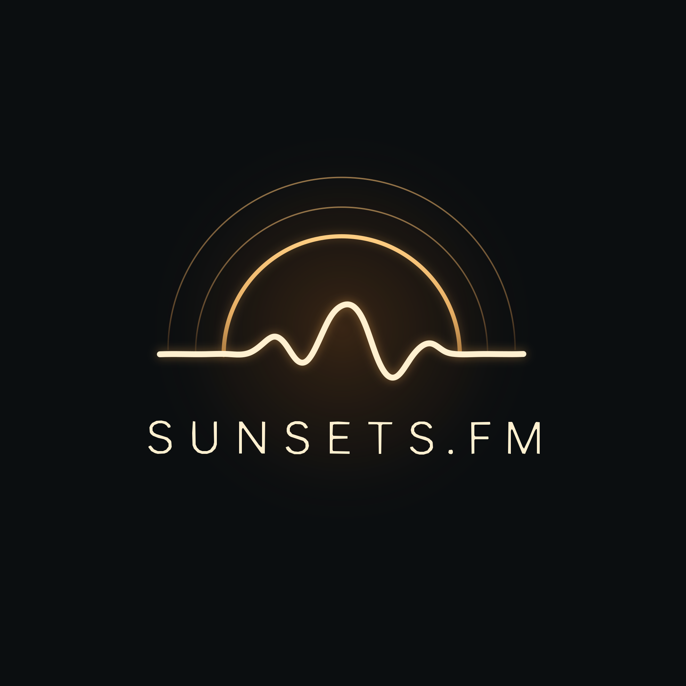

Owner supplied / Local brand reference
The sun changes.
The signal continues.

One signal. Infinite connections.
Built for the next chapter.
Use the compact frequency signature beside the name in navigation. Keep the complete sunset master for larger identity placements. Charcoal surfaces, warm ivory text, restrained gold, and clear signup actions.
Get First Access ↗Local style reference. Existing app layout and signup audiences remain independent.